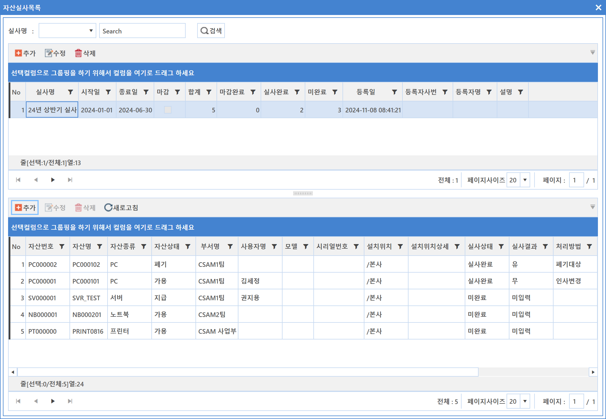
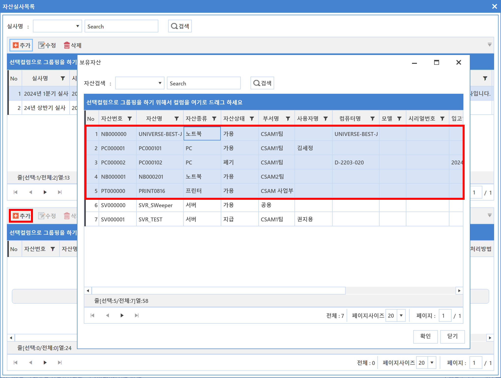
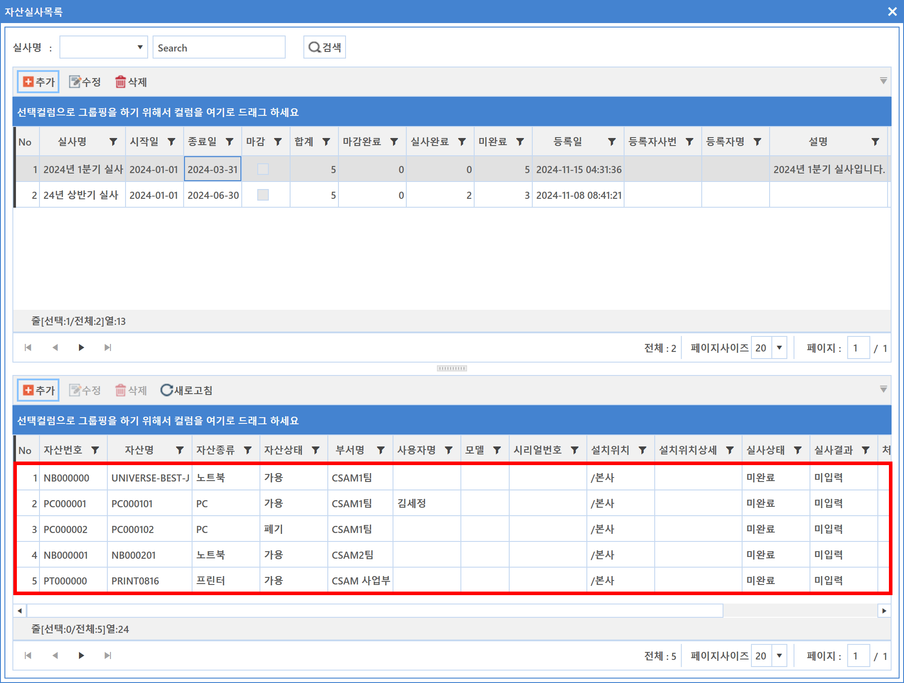
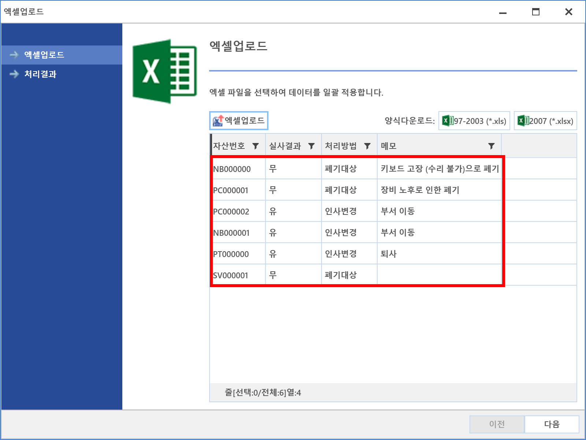
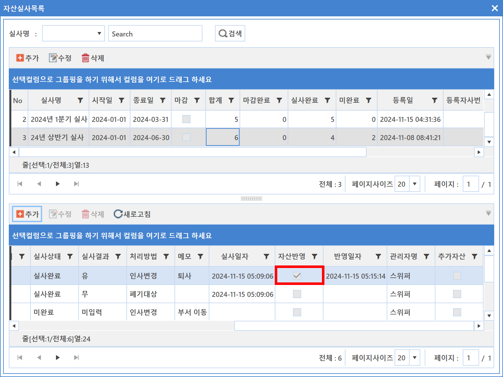
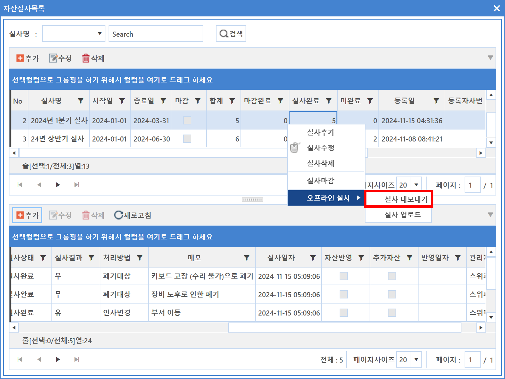

7-2-1. 실사목록
7-2-1. 실사목록
Source: https://www.sweeper.or.kr/etc/manual/721.html
7-2-1. 실사목록


자산실사 현황을 관리할 수 있으며, 실사와 대상 자산을 등록할 수 있기 때문에 실사에 대한 이력관리를 확실하게 정리하여 관리할 수 있습니다.
실사의 경우 다수 인원이 실사한 정보를 취합하여 기록하는 경우가 많기 때문에 Excel 문서를 업로드 할 수 있는 기능을 기본 제공합니다.

실사추가 방법
- 추가 버튼을 클릭합니다. 실사 추가/수정 화면이 팝업되면 해당 내용을 입력합니다.

- 실사명 : 실사 진행 명칭을 입력힙니다.
-
실사기간 : 실사가 진행되는 기간을 설정합니다.
-
실사기간은 단순 일정에 대한 정보이며 실사 기간 종료 후 자동마감되지 않습니다.
-
메모 : 실사 정보에 대한 간단한 추가 정보를 입력합니다.
-
입력이 완료되면 확인 버튼을 클릭합니다.
- 실사 정보가 추가되면 해당 실사 정보를 클릭합니다.

-
하단화면에서 추가버튼을 클릭합니다. 보유자산 화면이 팝업되면 실사대상 자산을 검색하고 선택하여 확인 버튼을 클릭합니다.
 -
추가된 실사대상 자산을 확인합니다.

개별 실사 진행방법
- 실사 대상 자산을 선택한 뒤 마우스 우클릭하여 실사결과 변경 메뉴를 선택합니다.

-
실사결과 화면이 팝업되면 해당 정보를 입력합니다.

-
입력이 완료되면 확인 버튼을 클릭합니다.
일괄 실사 진행방법
- 일괄 처리할 실사 대상 자산을 선택한 뒤 마우스 우클릭 합니다.

- Excel 97 - 2003 통합 문서(*.xls), Excel 2007 통합 문서(*.xlsx) 중 선택하면 해당 포멧으로 Data가 저장됩니다.
-
저장된 Excle 문서 파일을 열어 해당 내용을 편집합니다.

-
업로드 적용여부 : 업로드하여 정보를 업데이트 하는 것에 대한 설정입니다.
- 실사결과 : 미적용/유/무 중 선택하여 입력합니다.
-
정보 입력과 관련해서는 Excel 문서 하단 Sheet를 참고합니다.

-
실사 대상 장비 선택 후 마우스 우클릭하여 엑셀 업로드 메뉴를 선택합니다.

-
Excel 업로드 Wizard가 팝업되면 엑셀업로드 버튼을 클릭하여 저장된 Excel 문서를 선택합니다.
-
정보가 로드된 것이 확인되면 다음 버튼을 클릭합니다. 업로드 확인에 대한 메시지가 팝업되며 확인 버튼을 클릭합니다.


-
업로드 처리 결과를 확인한 뒤 완료 버튼을 클릭합니다.

-
처리 결과가 실패되는 경우는 Excel 문서 작성 시 오류일 수 있으므로 다시한번 재확인합니다.
-
최종 업로드된 결과를 화면에서 확인합니다.

실사 마감
- 마감할 실사를 선택한 뒤 마우스 우클릭하여 실사 마감을 선택합니다.

-
확인을 누릅니다.
-
미완료 실사가 없을 경우

- 미완료 실사가 있을 경우

자산 반영
- 자산 실사가 완료된 자산을 선택하고 우클릭 자산반영을 누릅니다.

- 자산반영 확인에 대한 메시지가 팝업되며 확인 버튼을 클릭합니다.

- 반영 완료된 자산은 자산반영에 체크 표시됩니다.

모바일 자산실사
- 모바일 자산실사 앱을 통해 추가한 자산은 추가자산에 체크 표시됩니다.
- 자산번호가 없는 경우는 자산반영을 하면 자동 채번되어 자산목록에 추가됩니다.

오프라인 실사
- 자산 실사 목록에서 우클릭하여 실사 내보내기 시 마감 되지 않은 모든 실사정보가 파일로 저장 됩니다.

- 모바일 자산 실사 앱의 자산정보 다운로드에서 파일 읽어오기 기능을 통해 저장 한 파일을 통한 자산 실사가 가능합니다.
- 모바일 자산 실사 앱의 실사정보 업로드에서 파일 내보내기 기능 을 통해 완료한 자산실사 정보를 파일로 저장 할 수 있습니다.
- 자산 실사 목록에서 우클릭 하여 실사 업로드 시 실사 데이터가 반영이 됩니다.

참고사항
관리자 관리에서 관리자에 사용자가 매핑되어 있어야 실사자에 이름이 나타납니다.
주의사항
엑셀 업로드 양식에 맞아야 정상업로드 됩니다. 혹시 에러가 발생했다면 [엑셀 업로드 오류] 를 참고바랍니다.
© Copyright SWeeper Inc.. All Rights Reserved